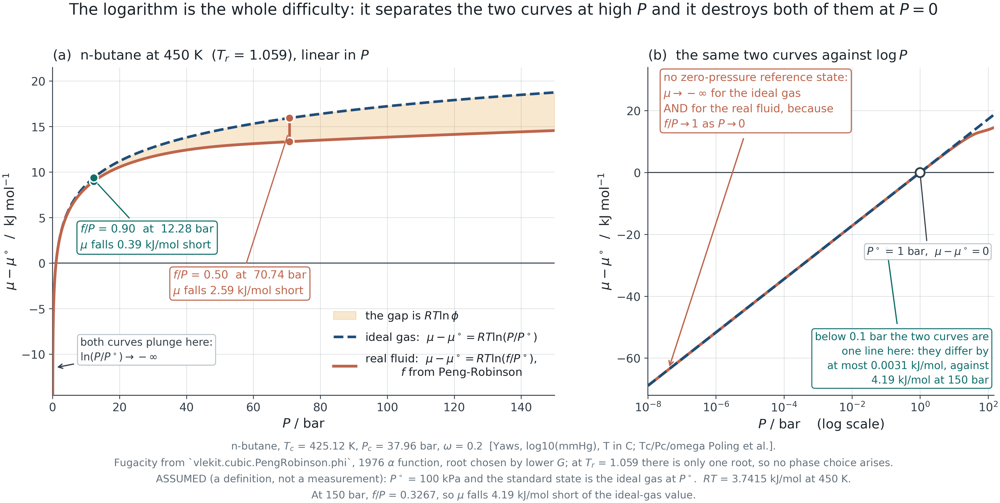
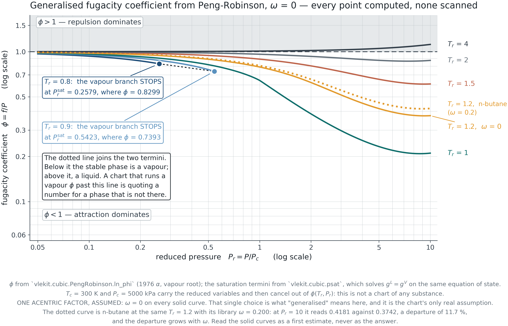
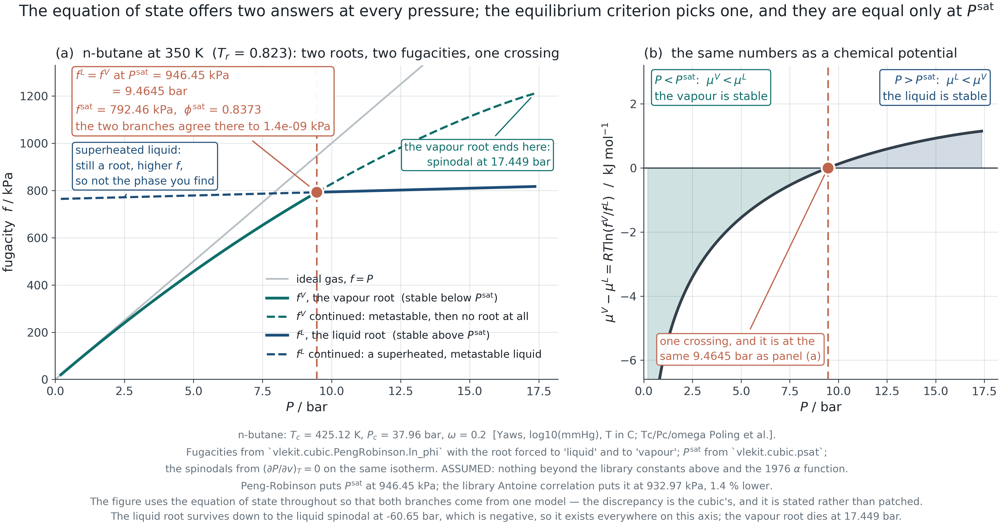
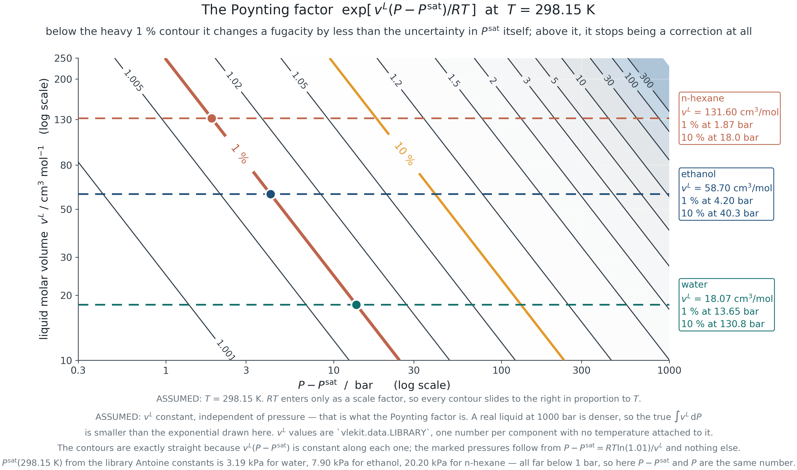
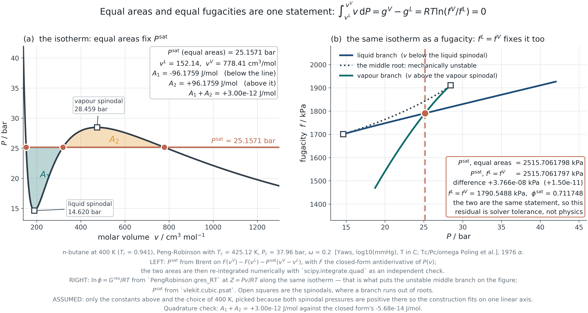

Module 2 · 2105603 Advanced Chemical Engineering Thermodynamics
9 August 2026
Fugacity is not corrected pressure.
It is the quantity constructed so that the ideal-gas equation
stays valid for a real fluid.
Introduction
Chemical potential is the true driving force, it is unusable in raw form, and fugacity is what makes it usable. Then a result you were handed in Module 1 is proved.
The callback
Module 1 presented the Maxwell equal-area construction as a geometric recipe and asked you to accept it.
This module ends by deriving it from equality of fugacity. You were owed that proof.
Four questions
PART I
Section 2.1 Three equalities at equilibrium, and the one that does the work.
2.1 · Why pressure is not the driving force
Two of them are familiar. The third is the one this course is about.
T^{\,\alpha} = T^{\,\beta} \qquad\qquad P^{\,\alpha} = P^{\,\beta} \qquad\qquad \mu_i^{\,\alpha} = \mu_i^{\,\beta}
Thermal
Equal temperature. Otherwise heat flows, and the state is not equilibrium.
Mechanical
Equal pressure — for a flat interface. Otherwise the interface accelerates. This holds for a real fluid exactly as it does for an ideal one.
Chemical
Equal chemical potential. Otherwise matter flows from high \mu to low \mu, and that is the transfer every separation process exists to control.
Read the middle card again. Nothing in this module says the pressure is unequal in a real fluid. What is lost is the simple link between pressure and chemical potential — not the mechanical equality itself.
2.1 · Why pressure is not the driving force
For an ideal gas, pressure measures the chemical driving force directly. That is why it feels like a driving force — and why the feeling misleads.
\left(\frac{\partial \mu}{\partial P}\right)_T = v = \frac{RT}{P} \qquad\Longrightarrow\qquad {\rm d}\mu = RT\,{\rm d}\ln P
\mu = \mu^\circ + RT\ln\frac{P}{P^\circ}
Why it fails
For a real fluid v \ne RT/P, so {\rm d}\mu = v\,{\rm d}P no longer collapses to a logarithm in P. The relation between the measurable quantity and the driving force is broken.
And a second problem
\mu \to -\infty as P \to 0, for every fluid, ideal or not. A zero-pressure reference state is therefore impossible — which is why the definition on the next slide is written as a ratio from the start.
2.1 · Why pressure is not the driving force

F2.1 · Ideal and real chemical potential on one axis. Both fall without bound as P \to 0; they separate at high pressure.
2.1 · Why pressure is not the driving force
Define the quantity that keeps the logarithmic form true. Everything else follows.
{\rm d}\mu \equiv RT\,{\rm d}\ln f \qquad\text{with}\qquad \frac{f}{P} \to 1 \ \ \text{as} \ \ P \to 0 \qquad\Longrightarrow\qquad \mu = \mu^\circ + RT\ln\frac{f}{f^\circ}
What it is
A definition, not a derivation. f is whatever it has to be for the middle equation to hold. The second condition fixes the arbitrary constant by anchoring f to P in the limit where they must agree.
Always a ratio
Write \mu - \mu^\circ = RT\ln(f/f^\circ) from the first slide and never write anything else. Absolute \mu and absolute f are not measurable; only ratios against a stated reference are.
The trap ahead
The reference state f^\circ is what students get wrong in Modules 3, 4 and 6 — Lewis-Randall against Henry, gas against liquid against solute. Fix the habit of naming it now.
PART II
Section 2.2 Where the equation of state finally does something other than plot an isotherm.
2.2 · The fugacity coefficient from an equation of state
\varphi = f/P, and it comes out of the same residual property integral you already met.
\ln\varphi = \int_0^P (Z-1)\,\frac{{\rm d}P}{P} \qquad\qquad \ln\varphi = \frac{1}{RT}\int_\infty^{V}\!\left[\frac{RT}{V} - P\right]{\rm d}V - \ln Z + (Z - 1)
Which form, and why
The left form needs Z as a function of P. A cubic equation of state is pressure-explicit — it gives P(V), not V(P) — so evaluating it would mean solving the cubic at every integration point.
The right form integrates over volume instead, and a cubic can be integrated analytically. That is why every implementation uses it.
The connection back
This is the same integral that produced the residual enthalpy and entropy in Module 1. Nothing new has been introduced — the departure-function machinery is being asked a different question.
2.2 · The fugacity coefficient from an equation of state
Derive it rather than quote it. The integral is elementary and the result is used in every remaining module.
\ln\varphi = Z - 1 - \ln(Z - B) - \frac{A}{2\sqrt2\,B}\, \ln\!\left[\frac{Z + (1+\sqrt2)B}{Z + (1-\sqrt2)B}\right]
A = \frac{aP}{R^2T^2}, \qquad B = \frac{bP}{RT}
Where each term comes from
Z - 1 - \ln(Z-B) is the repulsive part — the excluded volume. The logarithm with the \sqrt2 is the attractive part, and the \sqrt2 is there only because Peng-Robinson put b in two places in the denominator.
The root question
Below the critical temperature the cubic has three roots. The largest is the vapour, the smallest the liquid, and the middle one is mechanically unstable and meaningless. Choosing between the two outer roots by the lower \varphi — equivalently the lower Gibbs energy — is how a code decides which phase it is looking at.
2.2 · The fugacity coefficient from an equation of state

F2.2 · Generalised chart computed from Peng-Robinson at \omega = 0, not scanned from a textbook. The subcritical curves stop at saturation.
PART III
Section 2.3 Anchor it at saturation, then carry it to any pressure.
2.3 · Fugacity of a liquid
The liquid has no low-pressure limit to be anchored to, so it is anchored to the vapour it is in equilibrium with.
f^{\,L}(T, P^{\rm sat}) = f^{\,V}(T, P^{\rm sat}) = \varphi^{\rm sat}P^{\rm sat}
f^{\,L}(T,P) = \varphi^{\rm sat}P^{\rm sat}\, \underbrace{\exp\!\left[\frac{v^{\,L}(P - P^{\rm sat})}{RT}\right]}_{\text{Poynting factor}}
Why this works
The liquid is nearly incompressible, so v^{\,L} can be taken outside the integral \int v\,{\rm d}P. Everything hard about the liquid has been pushed into P^{\rm sat} and \varphi^{\rm sat}, both of which are properties of the saturated state and both of which are measurable.
The hypothetical liquid
Above the critical temperature there is no P^{\rm sat} and no liquid to anchor to. The reference becomes a hypothetical subcooled or superheated liquid, and the resulting arbitrariness reappears in Module 4 as the Lewis-Randall reference for a component that cannot exist pure at those conditions.
2.3 · Fugacity of a liquid

F2.3 · The two branches meet at P^{\rm sat}. The dashed continuations are the metastable and unstable extensions of each.
2.3 · Fugacity of a liquid

Quantified, not asserted
“Usually negligible” is not a statement anyone can act on. At 298 K the correction reaches one per cent at about 14 bar for water, 4 bar for ethanol and under 2 bar for n-hexane — because the exponent scales with v^{\,L}, and a bulky molecule has three times the molar volume of water.
The rule that follows
Drop it deliberately, with the pressure and the molar volume in front of you, and record that you dropped it. Never drop it because a textbook said it was small for a system it was not describing.
F2.4 · The one per cent contour, with three real liquids marked.
PART IV
Section 2.4 One criterion, two classical results — and the answer to a question asked three weeks ago.
2.4 · The equilibrium criterion, and a proof
Equal chemical potential becomes equal fugacity the moment the definition is substituted.
\mu^{\,L} = \mu^{\,V} \quad\text{and}\quad \mu = \mu^\circ + RT\ln\frac{f}{f^\circ} \qquad\Longrightarrow\qquad \boxed{f^{\,L} = f^{\,V}}
Why this is the useful form
\mu is not measurable and not computable without a reference. f has the units of pressure, tends to P in a limit everyone agrees on, and comes out of an equation of state in closed form. The criterion has been made arithmetic.
How a simulator uses it
Locating P^{\rm sat} is a one-dimensional root find on \ln f^{\,L} - \ln f^{\,V} = 0, with both fugacities from the same cubic. That is exactly what cubic.psat in the course toolkit does, and exactly what a commercial package does.
2.4 · The equilibrium criterion, and a proof

F2.5 · The Module 1 construction and the fugacity criterion, on the same isotherm. Agreement: 4\times10^{-8} kPa out of 2515.7.
2.4 · The equilibrium criterion, and a proof
One criterion, differentiated along the saturation line, gives the second classical result.
f^{\,L}(T, P^{\rm sat}) = f^{\,V}(T, P^{\rm sat}) \ \text{ for all } T \qquad\Longrightarrow\qquad \frac{{\rm d}P^{\rm sat}}{{\rm d}T} = \frac{\Delta h^{\rm vap}}{T\,\Delta v^{\rm vap}}
The step
Differentiate the equality along the coexistence curve. The Gibbs energies stay equal, so {\rm d}g^{\,L} = {\rm d}g^{\,V}, and with {\rm d}g = -s\,{\rm d}T + v\,{\rm d}P the result falls out in two lines.
Why it matters here
Two results that arrive in most courses as separate facts — an equal-area recipe and a slope formula — are consequences of one statement. That is what it means for a subject to have a structure rather than a syllabus.
2.5 · Where this goes next
Everything so far has been a pure substance. Mixtures need one more idea, and it arrives in Module 3.
The preview
In a mixture each species has its own fugacity in the mixture, \hat f_i, and its own coefficient \hat\varphi_i = \hat f_i / (y_i P). The equilibrium criterion becomes \hat f_i^{\,L} = \hat f_i^{\,V} for every species.
What is missing
\hat f_i is a partial molar quantity — a composition derivative — and the machinery for those is Module 3. Until then the symbol is a promise, not a definition.
The spine: an equation of state gives P-V-T → fugacity gives chemical potential a usable form → an equation of state lets you compute fugacity → equality of fugacity predicts phase equilibrium. You are at the second step.
Closing
The module in six statements.